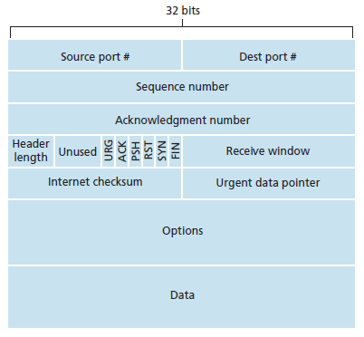

Notes 8.3.2
Reliable Data Transfer Protocol - No bits are corrupted or lost, and all are delivered in the same order.
Unidirectional Data Transfer - Data dransfer from sender --> reciever.
Bidirectional (Full Duplex) Data transfer - data from sender <--> reciever.
Finite State Machine - Abstract machine that can be in a finite number of states.
Positive/Negative Acknowledgmens - "OK"/"Repeat".
Automatic Repeat reQuest (ARQ) Protocols - Reliable data transfer protocols based on retransmission.
Alternating Bit Protocol - Instead of incrementing the packet ID, it alternates between 0 and 1 (only using 1 bit).
Go-Back-N - Transmit a maximum of N unacknowledged packets until timeout, then go back N packets and retransmit.
Selective Repeat - Only retransmit packets that were recieved in error or not recieved.
Connection-Oriented - Before data transfer can occur, the two processes must "handshake".
Maximum Segment Size (MSS) - Maximum size a segment can have.
Maximum Transmission Unit (MTU) - Largest link-layer frame that can be sent by the sender.
TCP Segmemt Structure:
